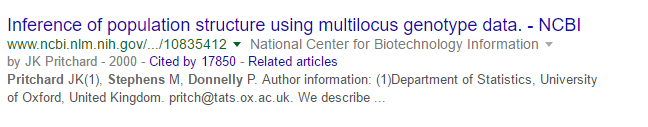
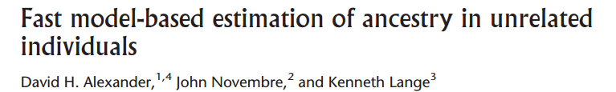
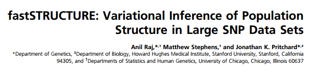
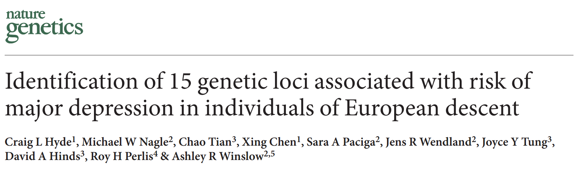

Scaling models of genetic variation to millions of humans
Wei Hao
October 14, 2016
Single Nucleotide Polymorphism (SNP)


Source: 1000 Genomes Project Consortium, Nature (2015)





23andMe: 450K+ individuals

TeraStructure

Stochastic variational inference (Hoffman et al 2013)
1000 Genomes K=7

1000 Genomes K=8


Acknowledgments
Co-authors:
- Prem Gopalan
- David M. Blei
- John D. Storey
Funding:
- NIH R01 HG006448
- NIH P50 GM071508
A very special thanks to
Our PICSciE administered machines:
hex.princeton.edu- The Muppets:
statler.princeton.eduwaldorf.princeton.edu